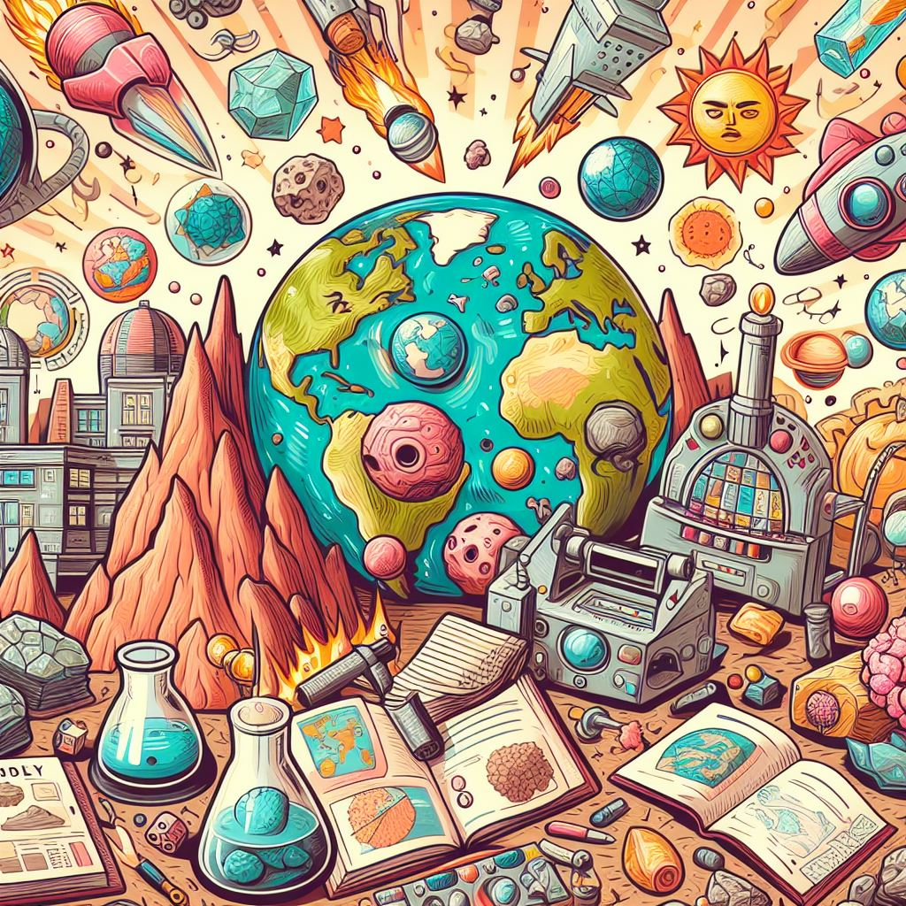
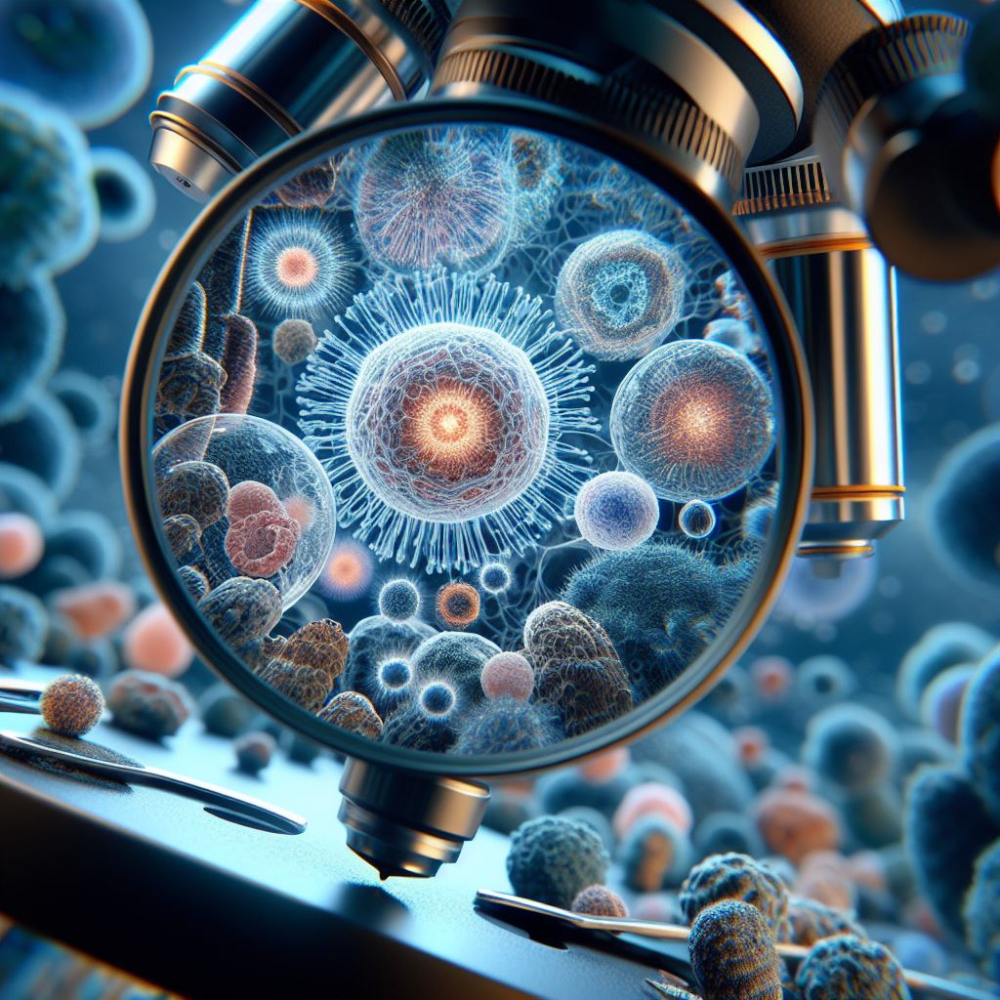
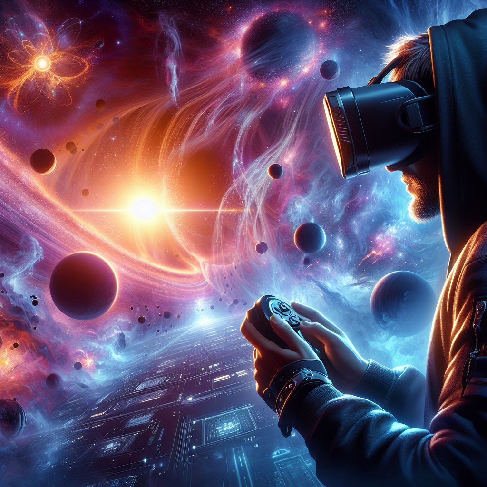
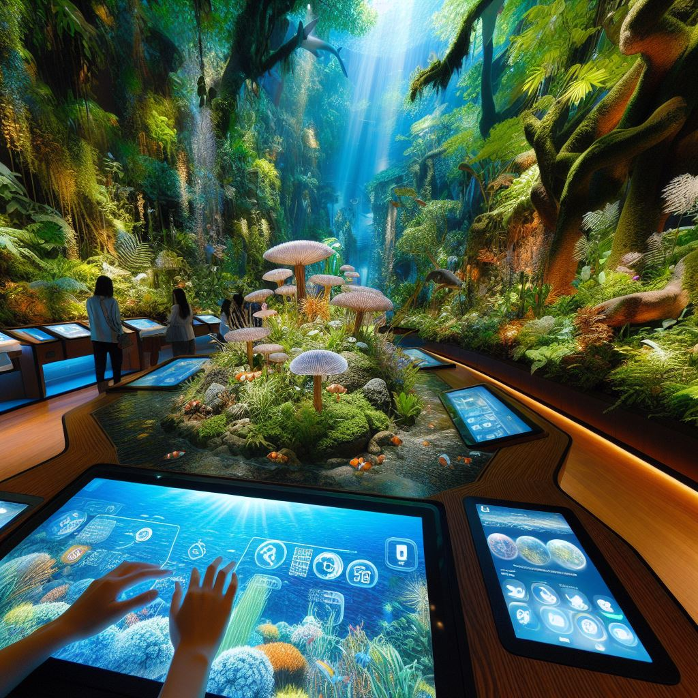
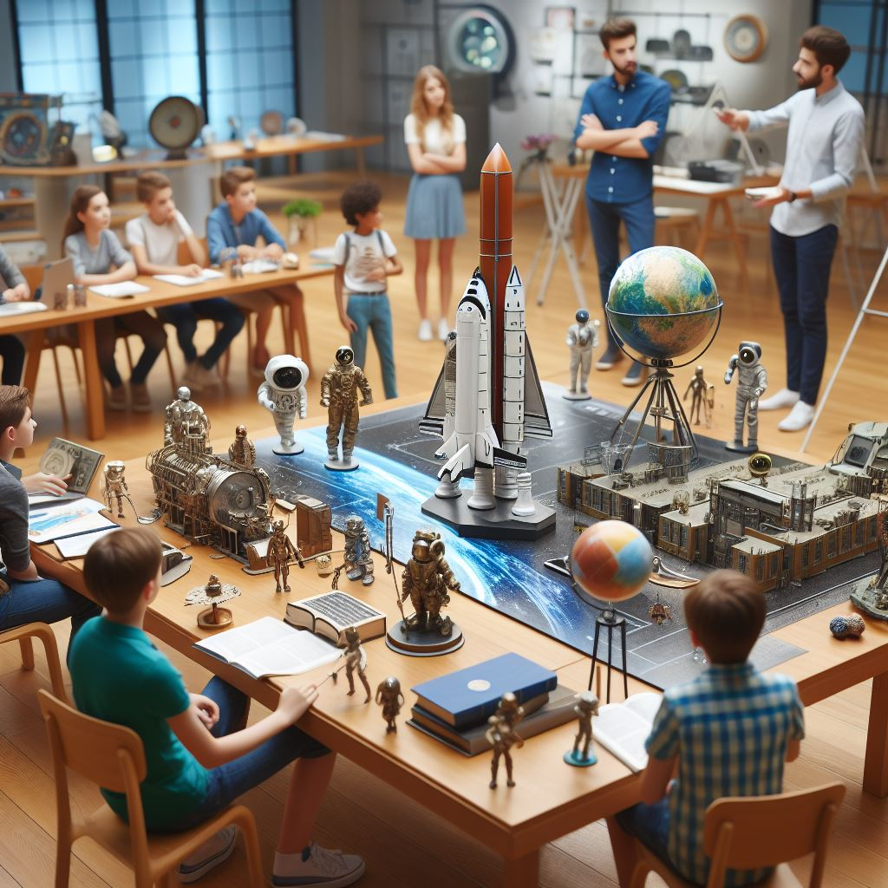
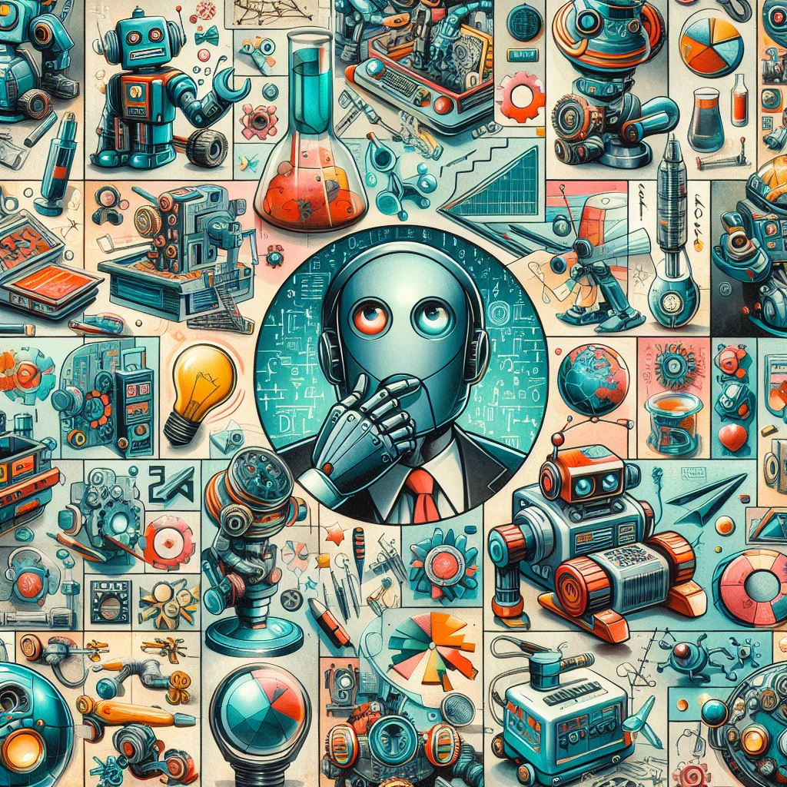
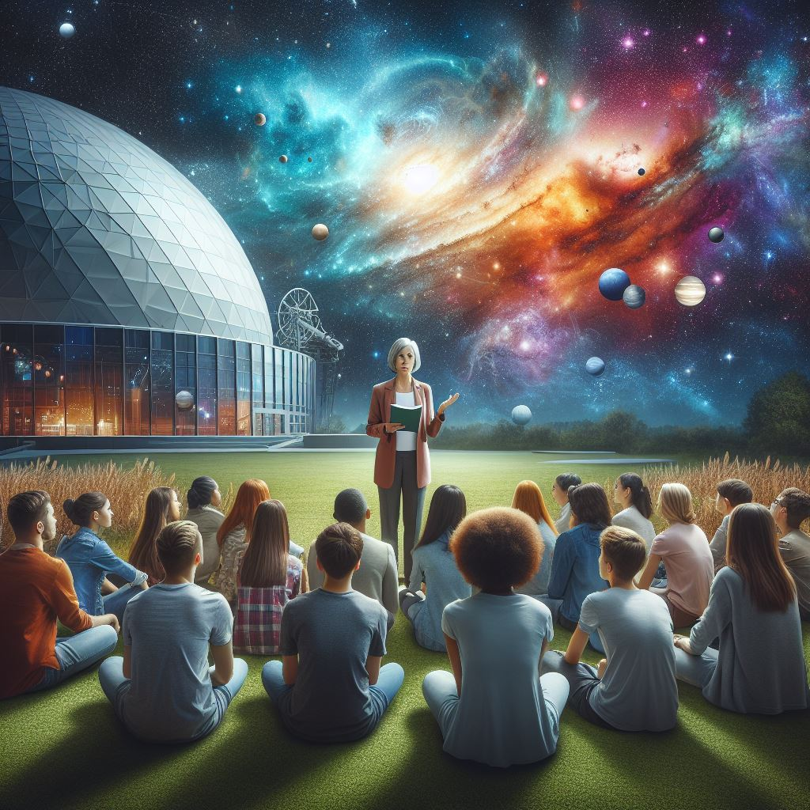
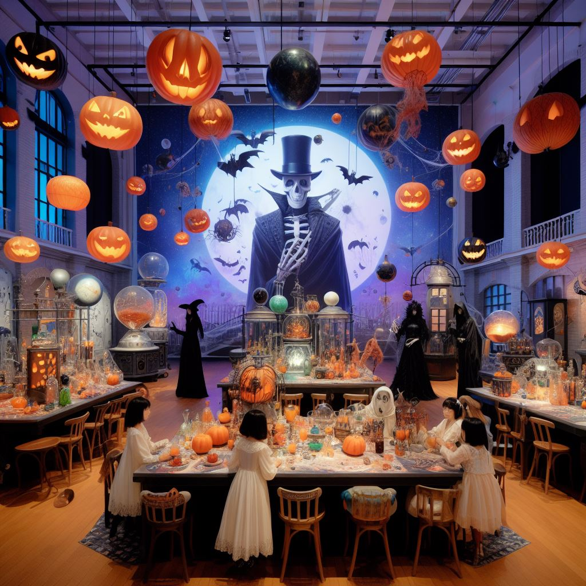
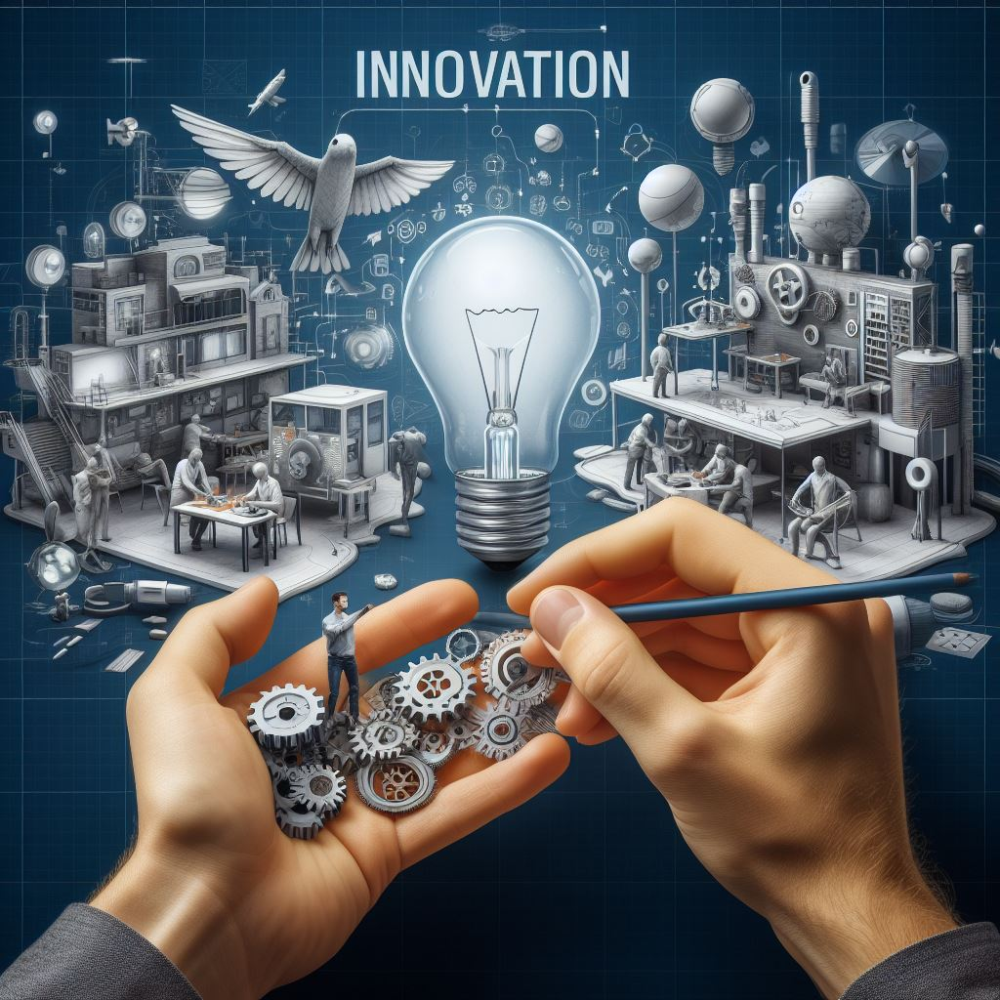

At the Gateway Science Museum we strive to offer something for everyone, and proudly offer a wide variety of permanent exhibits as well as exiting events throughout the year.
Exhibitions
Time Traveler's Odyssey: A Journey Through History
Explore the evolution of science across centuries, from ancient discoveries to modern innovations. Walk through interactive displays showcasing pivotal moments that shaped our understanding of the world.
Microcosm Marvels: The Hidden World Unveiled
Shrink down to the microscopic level and discover the wonders of the unseen. Peer through powerful microscopes to uncover the intricate beauty of cells, microorganisms, and the building blocks of life.
Cosmic Quest: Navigating the Universe
Embark on a cosmic adventure as you navigate the vastness of space. Marvel at celestial wonders, explore the mysteries of black holes, and experience the thrill of interstellar exploration through captivating simulations.
Nature's Playground: A Hands-On Ecosystem
Dive into the interactive ecosystem exhibit, where the natural world comes to life. From ecosystems in rainforests to the depths of the ocean, engage in hands-on activities that highlight the delicate balance of our planet's diverse environments.
Inventor's Workshop: From Idea to Innovation
Unleash your creativity in the inventor's workshop, where innovation takes center stage. Experiment with prototypes, learn about groundbreaking inventions, and get hands-on with the process of turning ideas into reality.
Future Frontiers: Emerging Technologies
Immerse yourself into the future with exhibits on cutting-edge technologies shaping tomorrow. Experience virtual reality, robotics, and artificial intelligence, and gain insights into the transformative possibilities that await in the world of science and technology.
Young Scientists' Corner: Where Curiosity Begins
Embark on an exciting journey designed for our youngest explorers, this exhibit encourages hands-on play and discovery. Nurture the budding scientist in your child with interactive exhibits designed to ignite curiosity and a love for learning.
Community Collaborations: Science in Action
Join forces with local scientific initiatives and community projects making a real impact. This exhibit showcases the power of collaboration and how science is contributing to positive change in our community and beyond.
Events
Seasonal Spectacles: A Year-Round Celebration of Science and Fun
At the Gateway Science Museum, we're delighted to offer a calendar full of exciting seasonal events, each designed to bring science to life in unique and entertaining ways. Join us throughout the year for these unforgettable experiences:
Spring Science Festival (April):
As nature comes alive, so does our museum! Dive into hands-on activities celebrating the wonders of spring. From botany workshops to interactive exhibits on seasonal phenomena, this festival is a perfect way to welcome the warmer months.
Summer Stargazing Nights (June-August):
Peer into the cosmos during our Summer Stargazing Nights. Join astronomers for telescope observations, interactive space talks, and cosmic-themed activities. Whether you're a seasoned stargazer or a novice, this event promises awe-inspiring celestial moments.
Fall Discovery Days (September-October):
Embrace the colors of fall with a series of discovery-themed days. Explore the changing ecosystems, engage in autumn-inspired experiments, and discover the science behind the beauty of leaves changing color.
Winter Wonderland Science (December-January):
Transform the winter season into a wonderland of science. Witness captivating demonstrations on the science of snowflakes, explore the physics of ice, and participate in festive experiments that bring the magic of winter to life.
Science Carnival Extravaganza (March):
Kick off spring with a bang at our Science Carnival Extravaganza. Enjoy a day filled with science-themed carnival games, interactive exhibits, and live demonstrations. It's a family-friendly event that combines the joy of a carnival with the excitement of scientific discovery.
Haunted Lab Adventures (October):
Experience spine-tingling science during our Haunted Lab Adventures. Uncover the spooky side of scientific phenomena with eerie experiments, ghostly exhibits, and a Halloween-inspired atmosphere for the whole family.
Innovator's Night (Monthly):
A recurring event celebrating local innovators and their groundbreaking work. Join us each month for engaging talks, panel discussions, and networking opportunities with leading minds in science, technology, and innovation.
Holiday Science Spectacular (December):
Wrap up the year with festive fun at our Holiday Science Spectacular. Explore the science behind holiday traditions, participate in themed workshops, and enjoy the enchanting ambiance of the museum decked out in holiday cheer.
Mark your calendars and join us throughout the seasons for these captivating events at the Gateway Science Museum. Science is a year-round adventure, and we can't wait to share the wonder with you! 🌟🔬🎉